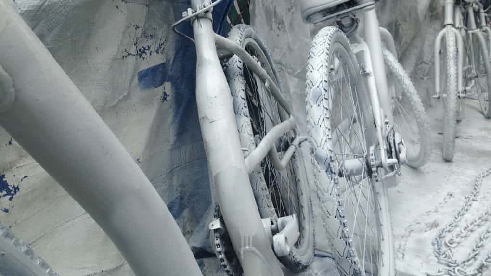
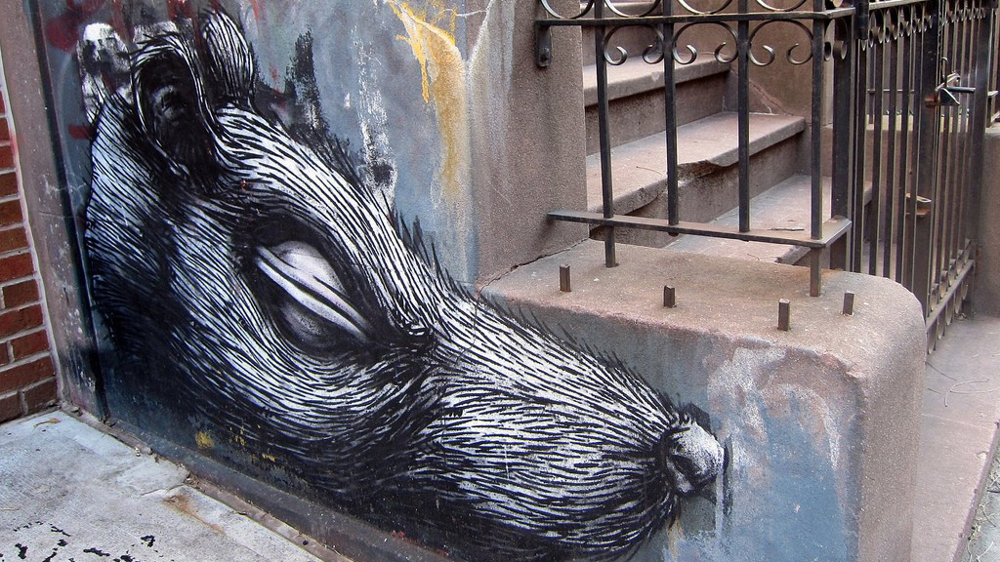
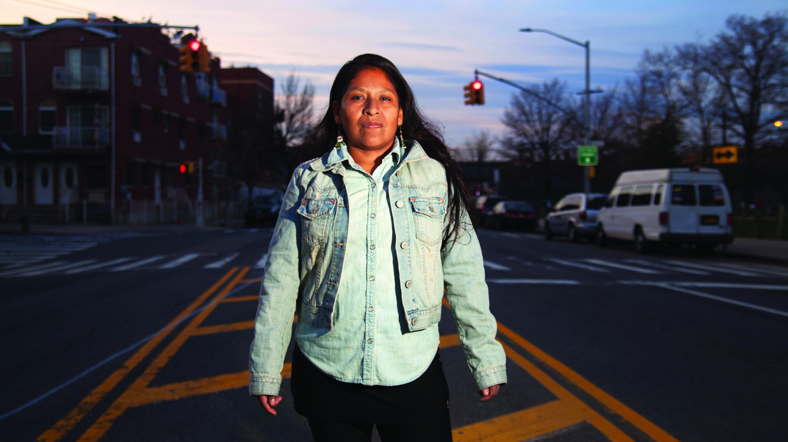

The Guardian
I will keep building ghost bikes as long as cyclists' lives are taken

The Awl
The Best New York Rat Stories of 2016
New York
Wayne Barrett, Who Taught Me Everything, Is Gone Just When We Need Him Most

Reclaim
“They Never Wanted to Listen to Us”
The Awl
But Was It an Accident, Really?